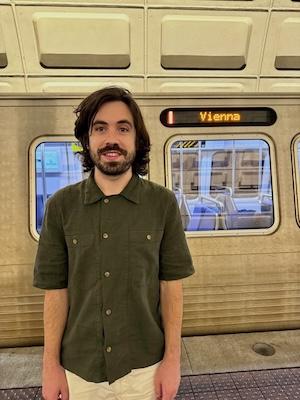

Hello, I'm Zach.
I am an optical and software engineer, developing super-resolution microscopy technologies for structural biology. I apply smart microscopy, machine learning, and biophysical principles to investigate the structure of cellular membranes at a resolution of less than 10 nm.
I am a postdoctoral researcher in the Department of Structural and Computational Biology, Max Perutz Labs at the University of Vienna. Before this, I worked as a postdoctoral researcher in the Lyda Hill Department of Bioinformatics at The University of Texas Southwestern Medical Center. I received my PhD in Biomedical Engineering from Yale University.